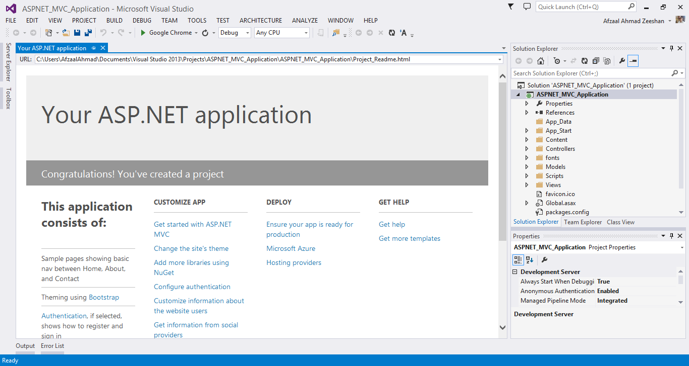
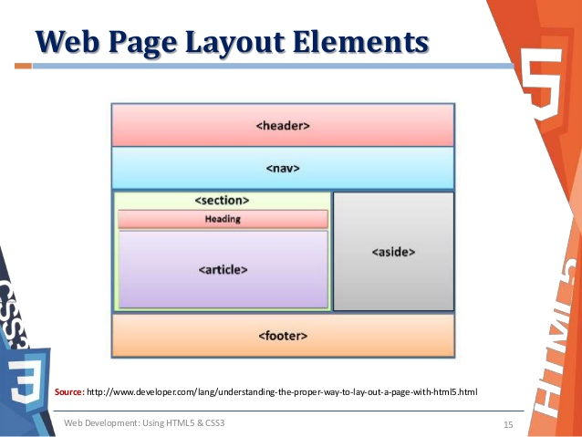

Web Pages is one of many programming models for creating ASP.NET web sites and web applications.
Web Pages provides an easy way to combine HTML, CSS, and server code:
Easy to learn, understand, and use
Uses an SPA application model (Single Page Application)
Similar to PHP and Classic ASP
VB (Visual Basic) or C# (C sharp) scripting languages
In addition, Web Pages applications are easily extendable with programmable helpers for databases, videos, graphics, social networking and more.
1.1 Web Pages Tutorial

If you are new to ASP.NET, Web Pages is a perfect place to start.
In this Web Pages tutorial you will learn how to combine HTML, CSS, JavaScript and server code, using server code written in VB or C# .
You will also learn how to extend your web pages with programmable Web Helpers.
1.2 ASP.NET Web Forms Model
h2>
ASP.NET web forms extend the event-driven model of interaction to the web applications. The browser submits a web form to
the web server and the server returns a full markup page or HTML page in response.
All client side user activities are forwarded to the server for stateful processing. The server processes the output of the
client actions and triggers the reactions.
Now, HTTP is a stateless protocol. ASP.NET framework helps in storing the information regarding the state of the application,
which consists of:
Page state
Session state
The page state is the state of the client, i.e., the content of various input fields in the web form.
The session state is the collective information obtained from various pages the user visited and worked with,
i.e., the overall session state. To clear the concept, let us take an example of a shopping cart.
User adds items to a shopping cart. Items are selected from a page, say the items page, and the total collected items
and price are shown on a different page, say the cart page.Only HTTP cannot keep track of all the information coming from
various pages. ASP.NET session state and server side infrastructure keeps track of the information collected globally over a session.
1.3 Web Pages Examples
Learn by examples!
Because ASP.NET code is executed on the server, you cannot view the code in your browser. You will only see the output as plain HTML.
At W3Schools every example displays the hidden ASP.NET code. This makes it easier for you to understand how it works.
CHAPTER 2 WEBPAGES LAYOUT
With Web Pages it is easy to create a web site with a consistent layout.
A Consistent Look
On the Internet you will discover many web sites with a consistent look and feel:
Every page have the same header
Every page have the same footer
Every page have the same style and layout
With Web Pages this can be done very efficiently. You can have reusable blocks of content (content blocks), like headers and footers, in separate files.
You can also define a consistent layout for all your pages, using a layout template (layout file).
WEB PAGE LAYOUT ELEMENTS:

2.1 Content Blocks
Many websites have content that is displayed on every page (like headers and footers).
With Web Pages you can use the @RenderPage() method to import content from separate files.
Content block (from another file) can be imported anywhere in a web page, and can contain text, markup, and code,
just like any regular web page.
Using common headers and footers as an example, this saves you a lot of work. You don't have to write the same
content in every page, and when you change the header or footer files, the content is updated in all your pages.
2.2 Using a Layout Page
In the previous section, you saw that including the same content in many web pages is easy.
Another approach to creating a consistent look is to use a layout page. A layout page contains the structure, but not the
content, of a web page. When a web page (content page) is linked to a layout page, it will be displayed according to the
layout page (template).
The layout page is just like a normal web page, except from a call to the @RenderBody() method where the content page will
be included.
Each content page must start with a Layout directive.
2.3 Preventing Files from Being Browsed
With ASP.NET, files with a name that starts with an underscore cannot be browsed from the web.
If you want to prevent your content blocks or layout files from being viewed by your users, rename the files to:
_header.cshtml
_footer.cshtml
_Layout.cshtml
CHAPTER 3 WEBPAGES GLOBAL
Most server side code are written inside individual web pages. For example, if a web page contains an input form, the web page typically contains
server code for reading the data.
However, by creating a page named _AppStart in the root of your site, you can have startup code executed before the site starts. If this page exists,
ASP.NET runs it the first time any page in the site is requested.
Typical use for _AppStart is startup code and initialization of global values like counters and global names.
Note 1: _AppStart should have the same file extension as your web pages, like: _AppStart.cshtml.
Note 2: _AppStart has an underscore prefix. Because of this, the files cannot be browsed directly.
Example for a Global WebPage
3.1 Before Every Page: _PageStart
Just like _AppStart runs before your site starts, you can write code that runs before any page in each folder.
For each folder in your web, you can add a file named _PageStart.
Typical use for _PageStart is setting the layout page for all pages in a folder, or checking that a user is logged in
before running a page.
3.2 ASP.NET Helpers
ASP.NET helpers are components that can be accessed by single lines of Razor code.
You can build your own helpers using Razor syntax stored as .cshtml files, or use built-in ASP.NET helpers.
You will learn how to use Razor helpers in the next chapters of this tutorial.
Below is a short description of some useful Razor helpers:
3.3 The WebGrid Helper
The WebGrid helper simplifies the way to display data:
Automatically sets up an HTML table to display data
Supports different options for formatting
Supports paging (First, next, previous, last) through data
Supports sorting by clicking on column headings